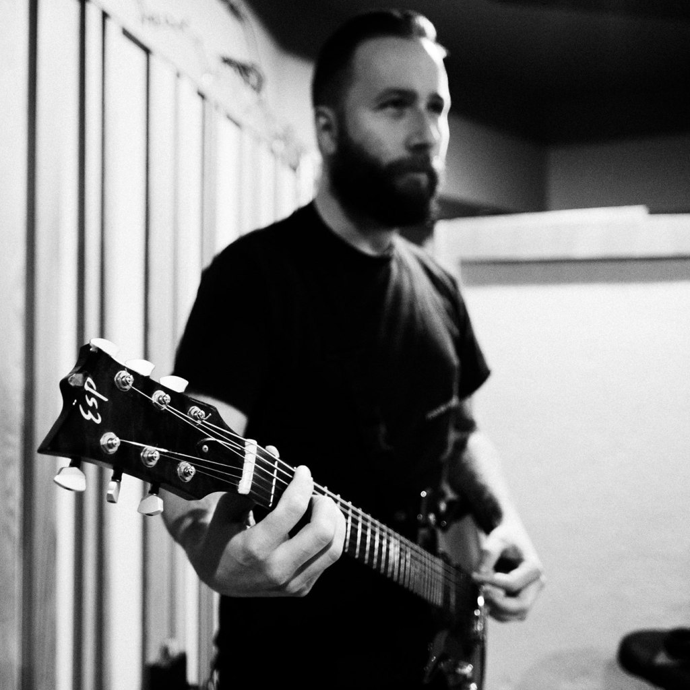

Interview – Mike McKenzie – The Red Chord/Stomach Earth/Umbra Vitae/Wear your Wounds
When did you start playing guitar and what guitar and equipment did you start on?
I started playing when I was about 11. I was playing around on an old Decca acoustic that my parents had but didn’t play. It was a right-handed guitar but I held it backwards because I didn’t know what I was doing but that felt natural. When I decided to ‘officially’ play guitar, my uncle who was a lefty as well, lent me his Kent Les Paul copy. I didn’t have an amp but my mom used to bring communion to inmates in prison and one of the inmates lent me his amp since he couldn’t use it while he was locked up. I don’t remember what the amp was but it was probably early 70’s or older and had minimal EQ options.
Which bands inspired you to start playing guitar and are there certain riffs or songs that specifically motivated you to start playing guitar? I usually say Metallica, specifically James Hetfield’s playing is the biggest influence on playing guitar, but I actually wanted to play drums when I started out. My parents didn’t want a drum kit in the house and my neighbor had sort of convinced me that I should play guitar because he wanted to play drums in our ‘band.’ I started getting into hard rock and heavy metal around 1989/1990 and I’d often just record the guitar solos from the songs on the radio. At the time, a lot of the songs on the radio had guitar solos. I loved Skid Row, Ratt, Metallica, Megadeth and anything with heavier guitars. There isn’t really a single riff or solo that made me want to play though, it was mostly just everything I liked.
When did you really feel your guitar playing and equipment got more professional and you thought: “Yes, this is the sound I really like!” ?
I’ve don’t think I’ve ever really had that thought. I’m never really satisfied with guitar tone. I settled on the 5150/6505 amps for The Red Chord back when we were touring full time and they’re excellent amps but I’m always trying to improve the tone. That has changed a bit more recently. My playing mainly is just to serve the song. I need to be a capable enough player to play whatever I feel is right for whatever I’m working on. So my growth as a player is largely based on what I’m writing at the time.
Do these 2 go hand in hand or did it evolve differently for your playing and your equipment? They are pretty related. Tone and ability are both part of the main goal, which is making the sound, really. I want something to sound a certain way and have a certain mood or tell a story so my tone and playing needs to reflect that.
Do you recall using what kind of amps, guitars, pedals and pickups on the albums? If so, would you mind sharing them? (for example: for album X we used a peavey 5150 mixed with a mesa dual rec and a TS9 and I was using a ESP LTD MH-400 with JB in the bridge)
Not on every record but I do have some documentation here and there. I actually recently released a video on my Patreon of some old footage of TRC in the studio talking through our guitar rig for the record, ‘Prey For Eyes’ – https://www.patreon.com/posts/prey-for-eyes-143430738
On every TRC record, I played an LTD EC-1000 for rhythm tones on the bridge pickup which was an EMG 81. Overdubs and leads might have been different; there’s one surf rock-sounding overdub on ‘Prey For Eyes’ that I played on a right-handed telecaster. ‘Clients’ is all 5150 II for the rhythm guitars and I think leads as well. I’m pretty sure we used Mesa Rectifier 4×12 cabs. Those guitars are quad-tracked. ‘Fed Through the Teeth Machine’ was a Mesa Mark IV and an Orange 4×12 for rhythms.
For other projects, I’ve mostly played my ESP Custom Shop guitar, which is sort of a modified EC-1000. It’s a neck through with an EMG 81 and a 60 in the bridge and neck, respectively and has a few other cosmetic differences. That guitar is set up for C standard, like the projects/bands I play it with: Wear Your Wounds, Stomach Earth & Umbra Vitae.
I rarely used pedals for rhythm tones but we’ve experimented with plenty of effects for leads. The Wear Your Wounds record, ‘Rust On the Gates of Heaven’ has a lot of different guitar sounds but one delay in particular that I enjoyed was the Source Audio ‘Ventris’ pedal that we layered in a few places. For a lot of clean tones on that record, we used a Sparrows Sons amp that I think was maybe only 1 of 4 made. One of the many interesting amps Kurt Ballou records with at God City.
I have noticed the difference in sounds over years of your albums; did you switch to other amps but do you also feel the amps were a better fit for you, the songs and your playing? Or was it mostly a different approach during recording the albums?
In the studio the goal is split between capturing the natural sound of the band and serving the songs. In my opinion, the 5150/6505 amps are excellent for live shows but not as easy to be happy with in the studio. We’ve tried a lot of methods and gear over the years to get the right sound. There are so many factors to finding a good tone for a record. The tone needs to feel right with the riffs and songs themselves, how we’re going to play, how they sit with the other instruments and tones in the mix and how they serve the overall record. My feelings about tones always change and I’m never 100% happy with my own sound.
I see you used the famous Peavey 5150 (mk II if I saw it correctly?); what is the main reason you used the 5150 + EMG 81 set up? Have you ever considered using a different amp or is the Peavey 5150 the perfect fit for your music in The Red Chord?
I don’t play a 5150 with TRC anymore. When we first started out, we were playing through a digital effects type rig, like a lot of players are doing now. We each had a Digitech 2101 FX processor as our preamp and rackmount QSC power amps. The sound worked at the time. I ended up buying a 5150 from a local music store probably around 2002, I think after we recorded our first record. It worked because it was chunky-sounding with a lot of saturation but I could control the sound well. The thick low mids worked really well for chugging riffs and had enough clarity for the technical stuff. We never used any additional overdrive pedals or anything like that because they weren’t needed. EMG 81’s and that amp were plenty of gain and keeping my string tension very tight and lowering the pickup quite a bit allowed for ample control of feedback/noise. The only pedals I used for almost all of TRC’s touring years were a Boss tuner and noise suppressor. The NS-2 is still the best noise suppressor, in my opinion. Later we switched to Peavey 6505+’s, which are almost the same amp.
In the last 3-4 years, I started using a Helix Floor with a Seymour Duncan Powerstage 700. I can pretty much replicate my 5150 sound with that rig but I can also travel with it easily. I also use the Helix for looping parts and to thicken the sound of just one guitar.
Any preference for the mk1 or mk2 Peavey 5150’s and if so why?
Not a huge one but I did think the original 5150 had a bit more warm saturation.
If you compare the ESP LTD Eclipse that you used vs the ESP Eclipse (custom?) you currently have: how big of a difference is it actually? Would you recommend one over the other for players looking for the best guitar?
There’s not a huge difference really. But I’m a lefty and ESP didn’t have any lefty guitars at the time so they built me that one. It’s an incredible instrument though. The body is a bit heavier and the low end is a bit more present.
Have you modded any of the guitar gear you have or you use the stock/default setup of the guitars, amps or pedals?
Other than replacement parts for things that wear out, I haven’t done much modification.
Can you tell me a bit more about the thick strings you use; how do they help your tone and does it help with playing as well? (why would a thinner set of strings won’t work for you?)
I prefer the heaviest string gauge that the guitar and tuning with allow because I pick pretty hard, especially with TRC. TRC is in D standard tuning and I play 12-54 gauge strings with a plain G. I don’t want the strings flopping around when I hit a chord hard and I want to be able to dig in while picking. A lot of my sound in the heavier bands I play in comes from picking aggressively, so I need the strings to stay put and not waver tonally when playing. I’ve been playing D’addario strings for nearly 20 years now and I’ve been using their NYXL strings lately.
How relevant is the speaker cab for you? Do you use what is at the venue, hook up to the FOH or do you prefer to play a default cab like a Mesa 4×12 with V30 speakers or something else?
I often play through a couple of Orange 4×12’s with Celestion V30’s. I prefer Orange and Marshall cabs, though I’ve been happy with some other nice sounding stuff like Emperor cabs. Most venues don’t have guitar cabs unless it’s a festival with a rented backline. Back when we were touring, I always brought cabs. These days, we do more one off shows and festivals so we’re flying in and can’t bring them. I’ll pretty much make do but luckily most rented backlines have Marshall cabs.
What is your favorite guitar atm and why?
Probably my custom because it’s just a really nice sounding instrument.
If you could choose one amp to play for the rest of your life (can also be a modeler or profiler); which one would it be for you and why?
I’d probably stick with the Helix since it can replicate enough sounds for me. I don’t need that many options so this thing would do it.
Which album are you most proud of as a guitar player?
I think from a strictly guitar playing standpoint it would be ‘Fed Through the Teeth Machine’ as it’s the most technical. But I think my playing on Wear Your Wounds ‘Rust On the Gates of Heaven’ is more tasteful.
Is there something you learned over the years about guitar gear (for example: using a tubescreamer, specific pickup or strings, amps, cabs, passive vs active pickups etc.) and you wished you knew before and gave you an ‘AHA!’ moment?
Not a specific moment but something I began to understand over time was that gear has a lot less to do with sound than I originally thought and that no singular piece of gear is going to do it. The combination of playing style, the gear you’re using and your perspective is really what forms your sound. It’s great to have great tools that work well but ultimately you can make anything work.
Passive vs Active pickups: which one do you prefer for your style and band and why?
I’ve been using active pickups for metal for such a long time they’re an easy choice. If you’re playing heavy music, a hot signal is helpful. Though if I switched to passive, I’d just make a few adjustments to my amps. I don’t have a strong preference.
What is the most consistent item in your guitar rig and why?
The guitar. It’s important to feel so comfortable with the instrument that it’s like an appendage. I know what the guitar is going to do and sound like in lots of settings which informs my playing. Everything around it could change and I’d still be able to communicate. Tied with the tuner because it’s essential!
Which riff of one of the songs you wrote are you most proud of and why?
I like the second riff in the Red Chord song, “One Robot To Another.” It’s weird and fun to play.
Do you use a certain guitar playing technique that is instantly recognizable for who you are as a guitar player? (damping, blues licks, disonant chords, power chords/barre chords, pinch harmonics)
People tell me it’s my up picking. I up pick everything in place of down picking. It was a weird habit I formed when I started playing and it’s become a staple in my style.
Which guitar players of current existing bands inspire you as a guitar player and why?
Erik Rutan of Hate Eternal/Cannibal Corpse. He has a unique and frenetic playing style that is instantly identifiable. Also I admire his work ethic and work as an engineer. Devin Townsend is another incredibly hardworking and unique player and musician. He seems to view the guitar as just one of his songwriting tools which is a view I share. Serving the music is the ultimate goal.
Last but not least: any last words or tips for guitar players out there?
If you’re playing in a band, especially if you’re writing, don’t forget that a band should be greater than the sum of its parts. Every instrument should work together to create something powerful. Also leave some low end space for the bass player! 😀
Listen to Mike’s band The Red Chord here: https://open.spotify.com/artist/3u0I9EqSd1Uo34MItEAIKc Check out Stomach Earth here: https://open.spotify.com/artist/6nSVgAkLlLFkVeSPGax9bQ Check out Wear your Wounds here: https://open.spotify.com/artist/162Upzibi1m79dQDaEUjl3 Check out Umbra Vitae here: https://open.spotify.com/artist/340Q4BNeDs4ePSpBii4yRa Mike is also a great producer! Check out his website here: https://www.nightedthrone.com/